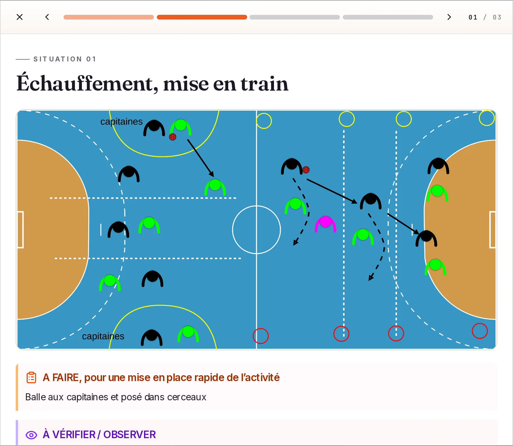
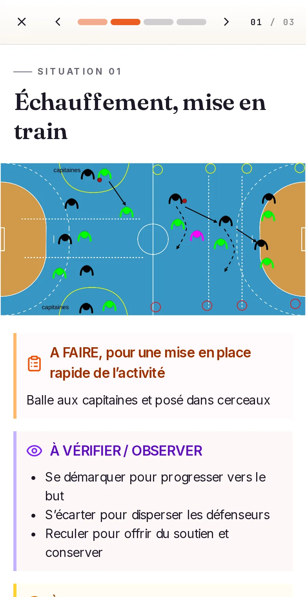

Le film dans le haut de page
Plutôt qu'une section de plus, le film prend la place de la capture du mode Présenter. Son affiche est une image du film où l'on voit justement le mode Présenter, sur ordinateur et sur téléphone : le haut de page montre la même chose qu'aujourd'hui, et se lance en plus.
Avant, après
Le haut de page de l'accueil et le bandeau des chiffres, dans les deux versions. L'affiche se lance pour de vrai.
Ne coachez
plus jamais seul.
Votre prochain entraînement est prêt.
⏰ 18h03. Vous sortez du boulot, crevé. Dans une heure, 16 jeunes joueurs vous attendent. Pas d'idée. Pas le temps.
→ Ouvrez Place aux Coachs. Piochez un exercice. Adaptez-le en 2 clics. C'est parti.


Au téléphone, la capture en hauteur mesure 660 px ; l'écran du film en mesure 190. Le bandeau des chiffres remonte d'autant.
Ce qui change
- L'affiche est une image du film, à 1:07, pas la miniature YouTube : celle-ci porte son propre titre, « Votre séance, du thème au terrain », qui ferait concurrence au titre de la page. L'image retenue montre une séance en mode Présenter sur ordinateur et sur téléphone : c'est le propos de la capture actuelle.
- Les colonnes ne bougent pas. Élargir celle de la figure ferait tomber « seul. » sur une troisième ligne du titre. L'écran 16:9 occupe la colonne d'aujourd'hui, environ 510 px de large et 290 de haut, centré face au texte : le haut de page garde exactement sa hauteur.
- La figure garde son cadre, son ombre violette et sa légende, mais perd les trois points de fenêtre : ce n'est plus une capture d'application, c'est un film. Son fond sombre en fait le seul aplat fort du haut de page.
- « Le film · 1:34 » sur l'affiche dit ce que c'est avant le clic ; le bouton de lecture orange dit quoi faire.
- Plus de bande de chapitres : le lecteur YouTube les affiche dans sa barre de progression, puisqu'ils sont écrits dans la description du film. Le haut de page n'en porte pas le poids.
- Plus de lien « Voir le film » à côté du bouton d'inscription : le film est à côté, ou juste dessous au téléphone.
- Plus de section du film : la page retrouve son enchaînement d'avant, et le haut de page garde sa hauteur.
Section à part ou haut de page
| Section à part (livrée) | Dans le haut de page | |
|---|---|---|
| Vu sans défiler | Non : il faut descendre, ou suivre le lien | Oui, sur ordinateur ; juste sous le texte au téléphone |
| Longueur de la page | Une section de plus, environ 900 px | Inchangée sur ordinateur, plus courte de 470 px au téléphone |
| Mode Présenter visible | Oui, par la capture | Oui, par l'affiche, et en mouvement une fois lancé |
| Chapitres | Bande de temps cliquable | Dans la barre du lecteur YouTube, après le lancement |
| Poids au chargement | Capture de 95 Ko en tête, affiche plus bas | Affiche de 32 Ko en tête : plus léger |
| Vie privée | Identique : rien de YouTube avant le clic, lecteur sans cookie, même phrase sous le film | |
Ce qu'on perd, ce qui reste à trancher
- La capture nette du mode Présenter disparaît. L'affiche montre le même écran, plus petit et sur fond sombre : on lit moins les consignes de la situation. C'est le vrai prix de la variante.
- Le premier coup d'œil devient un film à lancer. Qui ne clique pas voit une image arrêtée avec un bouton de lecture ; le haut de page doit rester compréhensible sans elle, ce que le titre et la carte « 18h03 » assurent.
- La mesure se simplifie : sans chapitres, le lancement n'a plus de variante. L'événement reste, ses propriétés `chapitre` et `deja_charge` tombent, et le tunnel « Film → inscription » garde son sens.
- Un change OpenSpec défait la section et la bande de temps livrées par film-accueil et modifie la spec du même nom ; la page de confidentialité ne change pas.